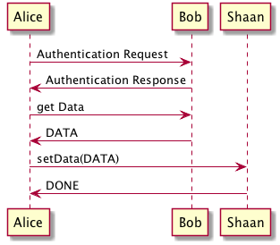
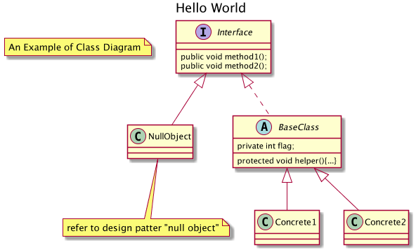
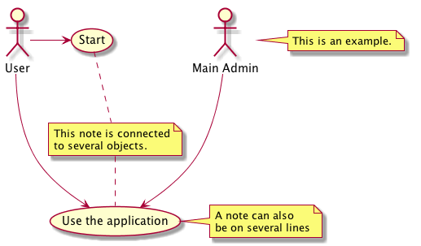

Tutorial
Table of Contents
1 Windows
- c-x 2 : Split window horizontally
- c-x 3 : Split window vertically
- c-x 0 : Close current window
- c-x 1 : Close all but the current window
- c-x o : Cycle through the open windows.
2 Frames
- C-x 5 b : Switch buffers by opening a new frame.
- C-x 5 0 : Close the current frame.
- C-x 5 f : Open a file in new frame.
- C-x 5 o : switch between frame.
3 Tables
3.0.1 Table
- C-c | : Format the selected content to table.
- C-u 2 C-c | : Formats the selected content to table and column are decided based on 2 spaces.
3.0.2 Column :
| Key | Function |
|---|---|
| M-left arrow | move column left |
| M-right arrow | move column right |
| Tab | move forward |
| Shift-Tab | move backword |
| M-Shift-left | delete column |
| M-Shift-right | insert column |
| Sorting Column | C-c ^ – Then it ask for the type of sorting : Date, Numeric, String |
3.0.3 Row :
| Key | Function |
|---|---|
| M-up Arrow | move row up |
| M-down | move row down |
| C-c ret | Add horizontal rule : Mostly used for Table column names. |
4 Point :
| Command | Key Combination |
|---|---|
| Next line | C-n |
| Previous line | C-p |
| Next Charecter | C-f |
| Previous Charecter | C-b |
| Next word | M-f |
| Previous word | M-b |
| Beginning of line | C-a |
| End of line | C-e |
| Start of buffer | M-< |
| ENd of buffer | M-> |
5 Mark :
- C-space to start the mark
- C-w : Cut the text
- M-w : Copy the text
- C-y : Paste the text
- C-x C-x : Go from point to mark
6 Library loading
6.1 Load
6.2 require
6.3 auto-load
6.4 idle-require
7 Agenda :
7.1 AgendaTutorial
- C-c C-s to invoke calendar to schedule a task.
- C-c a to invoke aendar mode.
- t for TODO
- a for agenda
- l for Log
8 TODO stuff
8.1 C-c C-t : To cycle through TODO life cycle.
8.2 DONE testing todo done.
8.3 Config to add multiple state of TODO lifecycle
;; Setting TODO Order
(setq org-todo-keywords
'((sequence "TODO(t)" "DOING(i)" "PENDING(p)" "MEETING(m)" "|" "DONE(d)" "CANCELED(c)")))
9 Random Stuff
- C-u M-! : Allows to run shell command and output the result on the current view.
- C-u 2 M-! : Passes 2 as argument. Is it useful ?
- C-Shift-Backspace : Delete line.
- M-x customize-apropos <text> : Creates a new buffer with all the variable matching the text that can be custumizable. The content is basically added to .emacs file.
- C-x C+ zoom in, C-x C- Zoom out.
- C-x C-0 restore default font.
- C-] : Cancel a command.
10 Searching
- M-% string RET newstring RET : y
11 Cool setting
12 Sequence Diagram :
12.1 Installation :
12.1.1 Get plantUml
- plantUmlOrgMode
- init file changes
;; active Org-babel languages
(org-babel-do-load-languages 'org-babel-load-languages '(;; other Babel languages (plantuml . t)))
- Add plantUml jar to the path (setq org-plantuml-jar-path (expand-file-name "~/src/org/contrib/scripts/plantuml.jar"))
12.1.2 Install graphiz and dot
brew install libtool brew link libtool brew install graphviz brew link –overwrite graphviz Source
12.2 Example



13 Table Export
- HTML : C-c + C-e – h-o
- PDF : C- + C-e – l-o
14 Checklist
- Checkilst Testing
[2/4][X]item1[X]item2[ ]item4[ ]item4
- Checklist Testing 2
[66%][X]item1[X]item2[ ]item3
| Command | What it does ? |
|---|---|
| M+Shift+Enter | to add a new |
| C-c C-c | To mark the task complete |
| / C-c C-c | At the top line to show task complete |
| % C-c C-c | Shows in percentage |
15 Resources:
These are some of the awesome people who were kind enough to share there knowledge. Please like and share their videos if you like.
If I missed any other reference, please do let me know.